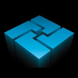

‹ Jobs
·
–
·
Room 1
‹
›
Shop drawings
Assembly
Hardware
Scan
Jobs
Latest first
Job number
Name A–Z
Notes
Add note
Cabinets ‹
› Parts
Cabinet
Whole job
Solid
See-through
Walls
‹
3D
›
★ Save view
Select cabs
Isolate
‹ Prev
Next ›
Explode
Dims
Show / hide
Measure
Section
Notes
‹ Back to job
Measure
Done
–
mm
Straight (level / plumb)
Undo
Clear all
Section
Reset
Done
Height
Flip
Left – right
Flip
Front – back
Flip
Notes
Add note
Report a fix
Close
Tap the spot the note is about
No spot
Cancel
Cancel
Save note
Report a fix
3D model looks wrong
Part info or lists wrong
Part Finder not working right
Other
Send this picture of the screen with it
Cancel
Send
Fix list
ID
–
Close
Hide this part
Show / hide
Textures
Views
Done
×
ID
–
Scan a part label
Scan a sticker to light up its part, or tap a cabinet to see its size.
‹
›
−
100%
+
Upload PDF
Close
Close